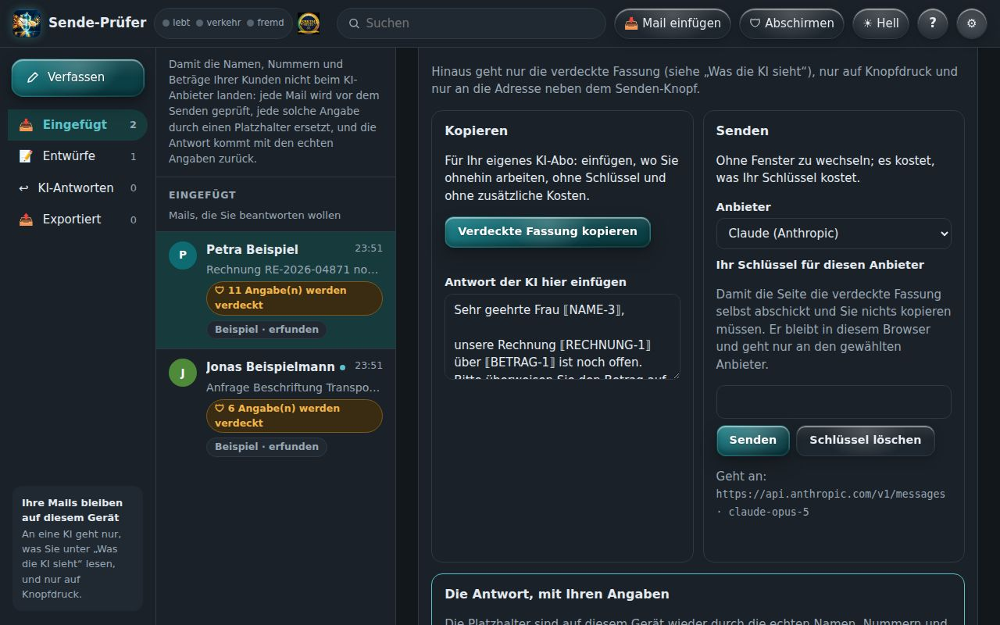
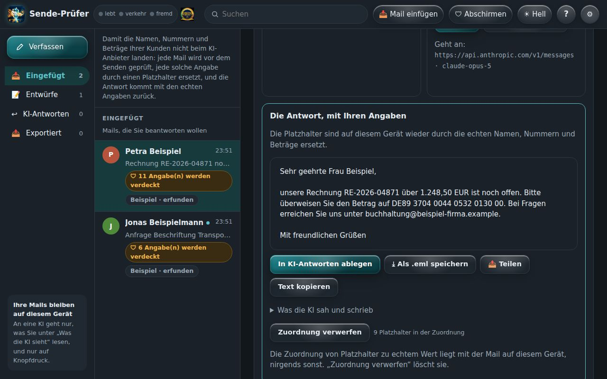
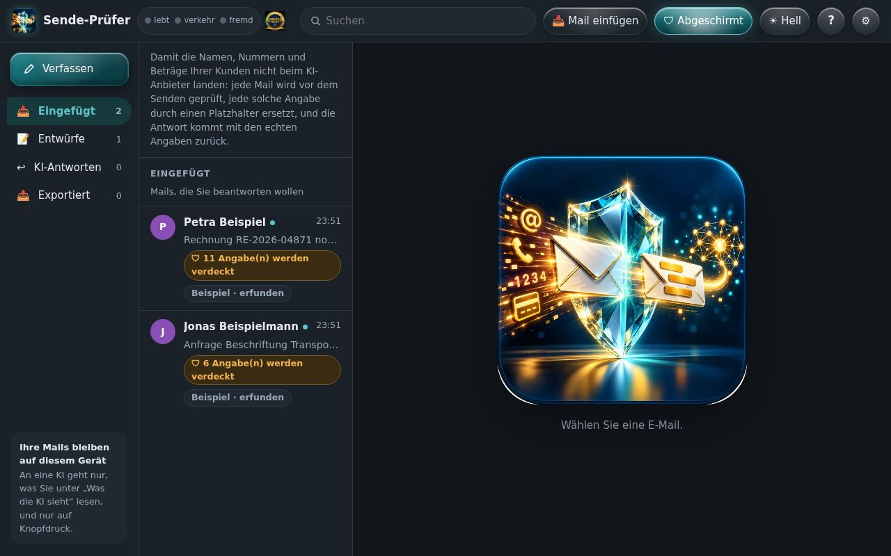
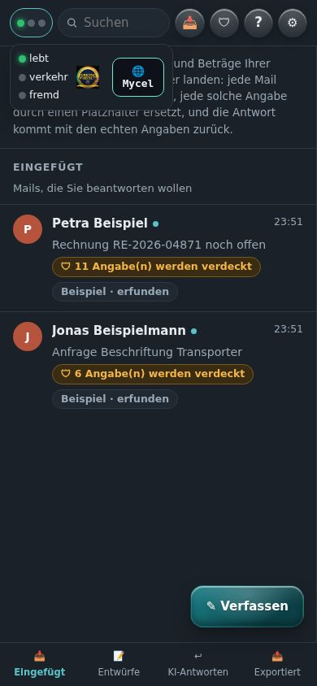
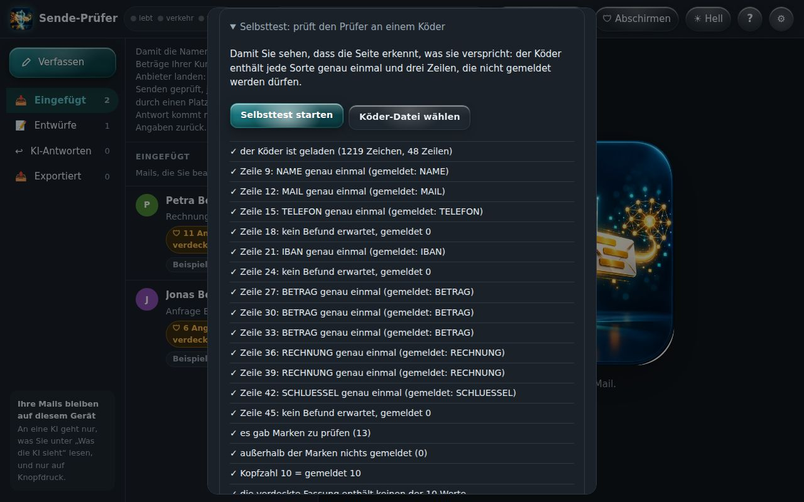

In 11 Szenen durch den ganzen Weg: eine Mail kommt herein, die KI sieht nur Platzhalter, und die Antwort kommt mit den echten Angaben zurück. Alle Bilder sind echte Aufnahmen der App mit einer erfundenen Mail.
Petra Beispiel⟦NAME-1⟧·1.248,50 EUR⟦BETRAG-1⟧·DE89 3704 0044⟦IBAN-1⟧
Links die vier Ordner: Eingefügt (empfangene Mails), Entwürfe, KI-Antworten und Exportiert. In der Mitte die Liste, rechts die gewählte Mail. Jede Zeile trägt eine Zahl: so viele Angaben werden vor dem Weg zur KI verdeckt. Alles liegt im Speicher dieses Browsers, nicht auf einem Server.
🎙 Das ist Ihr Postfach im Browser. Vier Ordner, eine Liste, rechts die Mail. Die Zahl an jeder Zeile sagt, wie viele Angaben geschützt werden. Nichts davon liegt auf einem Server.
02
Eine Mail hereinholen
📥 Mail einfügen nimmt eine empfangene Mail auf: aus der Zwischenablage, als Text oder als gespeicherte .eml-Datei. Kopfzeilen (Von, An, Betreff) werden erkannt, auch kodierte. Die Mail landet in „Eingefügt“ und bleibt auf diesem Gerät.
🎙 Eine Mail holen Sie mit Mail einfügen herein: aus der Zwischenablage oder als gespeicherte Datei. Von, An und Betreff erkennt der Sende-Prüfer selbst.
03
Die Mail, wie sie ist
Die Beispiel-Mail aus dem Menü (⚙ → Beispiel-E-Mail laden) ist erfunden und zeigt den ganzen Weg: Namen, eine Firma, Mailadressen, eine Rechnungsnummer, einen Betrag und eine Kontonummer. So sieht Ihr Text aus — in der Ansicht „Original“.
🎙 Hier eine erfundene Mail mit allem, was nicht zur KI soll: Namen, Adressen, Rechnungsnummer, Betrag und Kontonummer.
04
Was die KI sieht
Ein Tipp auf Was die KI sieht zeigt genau den Text, der hinausgehen würde. Jede Angabe ist durch einen Platzhalter ersetzt, etwa ⟦NAME-1⟧ oder ⟦BETRAG-1⟧. Dieselbe Angabe bekommt immer denselben Platzhalter, damit die KI den Sinn behält.
🎙 Mit Was die KI sieht erscheint der Text, der wirklich hinausgeht. Jede Angabe ist ein Platzhalter. Dieselbe Angabe hat immer denselben.
05
Namen, die kein Muster findet
Mailadressen, Nummern und Beträge erkennt der Prüfer an ihrer Form. Namen nicht — „Müller“ sieht aus wie jedes andere Wort. Deshalb werden die Namen aus Von und An übernommen, und unter Weitere Namen tragen Sie ein, was sonst noch verdeckt werden soll: eine Firma, ein Kollege, ein Ort.
🎙 Namen erkennt kein Muster. Die Namen aus Von und An nimmt der Sende-Prüfer selbst, weitere tragen Sie hier ein.
06
Zwei Wege hinaus

Kopieren für Ihr eigenes KI-Abo: in ChatGPT, Claude oder Le Chat einfügen, ohne Schlüssel und ohne zusätzliche Kosten. Senden geht direkt an Anthropic oder Mistral, mit Ihrem eigenen Schlüssel — es kostet, was Ihr Schlüssel kostet. Beide Wege sind gleichrangig; hinaus geht nur der verdeckte Text, und nur auf Knopfdruck.
🎙 Zwei Wege, beide gleichwertig: kopieren für Ihr eigenes KI-Abo, oder direkt senden mit Ihrem Schlüssel. Hinaus geht nur der geschützte Text, und nur, wenn Sie tippen.
07
Die Antwort kommt mit Klartext zurück

Die Antwort der KI enthält die Platzhalter. Eingefügt (oder direkt empfangen) setzt der Sende-Prüfer die echten Angaben wieder ein — hier steht dann wieder „Frau Beispiel“ und „1.248,50 EUR“. Ablegen, als .eml speichern oder teilen geht von hier aus.
🎙 Die Antwort der KI kommt mit Platzhaltern zurück. Der Sende-Prüfer setzt die echten Angaben wieder ein, und Sie können sie ablegen, speichern oder teilen.
08
Abschirmen

🛡 Abschirmen hält Schreib-Helfer wie Grammarly oder LanguageTool und die KI-Schreibhilfe des Browsers von den Schreibfeldern fern. Hängt etwas Fremdes Elemente in die Seite, erscheint oben ein roter Hinweis und die Lampe fremd leuchtet. Das ist eine Bitte an die Erweiterungen, kein Riegel — Programme, die den Bildschirm mitlesen, sieht keine Webseite.
🎙 Abschirmen hält Schreib-Helfer und die KI-Schreibhilfe des Browsers aus den Feldern heraus. Liest etwas Fremdes mit, leuchtet die Lampe fremd.
09
Ein eigener Knoten im Netz
Oben neben dem Namen die Netz-Leiste: drei Lampen (lebt · verkehr · fremd), das Siegel und die Mycel-Blase. Der Sende-Prüfer ist ein Knoten im SBKIM-Netz mit eigener Kennung. Mit dem Netz verbindet er sich nur, wenn Sie in der Mycel-Blase darauf tippen — und dann geht nur seine Visitenkarte hinaus, keine Mail.
🎙 Oben die Netz-Leiste: drei Lampen, das Siegel und die Mycel-Blase. Der Sende-Prüfer ist ein eigener Knoten. Ins Netz geht er nur, wenn Sie es wollen, und nie mit Ihren Mails.
10
Am Handy

Am Handy stehen oben nur die drei Lampen. Ein Tipp klappt Namen, Siegel und Mycel-Blase darunter auf, ein Tipp daneben schließt wieder. Die Ordner liegen unten, ✎ Verfassen schwebt rechts unten.
🎙 Am Handy zeigen oben drei Punkte den Zustand. Ein Tipp klappt Siegel und Netz auf. Die Ordner liegen unten.
11
Der Selbsttest

Im Menü (⚙) prüft der Selbsttest den Prüfer an einem Köder: jede Sorte steht dort genau einmal, dazu Zeilen, die nicht gemeldet werden dürfen. So sehen Sie selbst, dass er erkennt, was er verspricht — ohne eigene Daten.
🎙 Der Selbsttest im Menü prüft den Prüfer an einem Köder. So sehen Sie selbst, dass er hält, was er verspricht.